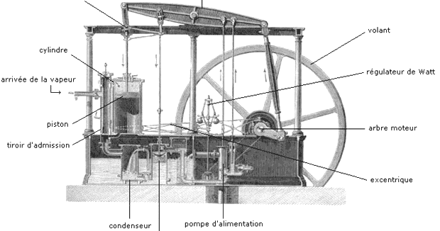

Le prime applicazioni del vapore come metodo di azionamento di macchinari si sono avuti all'inizio del XVIII secolo, per il pompaggio delle miniere con un Sistema ideato nel 1698 da Thomas Savery che sfruttava il vuoto creato dalla condensazione dell’acqua immesso in un recipiente, per sollevare l’acqua presente nelle miniere. In seguito all’invenzione del sistema a pistoni la macchina divenne in grado di generare energia lavoro convertendo in energia meccanica l’energia sprigionata dal vapore. I primi utilizzi industriali di questa macchina furono con Thomas Newcomen che sviluppò una macchina molto più efficiente di quella precedente. Il problema di queste macchine e che non riuscivano a sfruttare appieno il calore del vapore e si aveva un consumo enorme del carbone elemento usato come combustibile per scaldare l’acqua. James Watt perfezionò la macchina di Newcomen sostituendo il moto alternato con un moto rotatorio e poi il cilindro di raffreddamento non veniva più raffreddato e quindi il vapore del ciclo successivo entrava in contatto con superfici già calde. Pian piano la macchina a vapore iniziò a sostituire i mulini come metodo di azionamento data la sua efficienza, quindi si passò ad utilizzare una fonte pulita e rinnovabile come l’acqua o il vento a una fonte molto più efficiente come il carbone cui l’utilizzo porterà a gravi problemi ambientali e cui le risorse sarebbero destinate ad esaurirsi nel tempo.
Questa macchina era costituita da un cilindro nel quale, c’era un pistone. Il vapore si creava all’esterno del cilindro per poi essere inserito nella base dello stesso cilindro, facendo così salire il pistone, provocato dall’aumento della pressione. Arrivata alla fine, il pistone apre una valvola che attiva un getto d’acqua all’interno del cilindro, facendolo così raffreddare. In questo modo, la pressione sarebbe calata la pressione e insieme ad essa anche il pistone, la cosa che rivoluzionò di più questo tipo di macchina, sono i movimenti che faceva il braccio collegato al pistone, facendo così capire, il vero utilizzo della macchina, ovvero una grossa pompa idraulica per poter togliere le grosse quantità di acqua dalle miniere.
Questa macchina cambiò il sistema sistema industriale dato che permise rese più efficiente il sistema di produzione in particolar modo quello tessile dato che il tessuto prodotta da un telaio che sfruttava il motore a vapore era migliore e lo spessore del filo era regolare in confronto a uno fatto a mano. La macchina a vapore non era destinata a cambiare solo il mondo dell’industria ma anche quello dei trasporti dato che questa macchina poteva essere applicata alle navi iniziando lo sviluppo dei primi piroscafi, ma ancora più importante rivoluzionò il trasporto sulla terraferma in maggior modo quello a rotaia sviluppando i primi treni a vapore questi nati dall’esigenza di trasportare grandi quantità di carbone a una grande velocità.